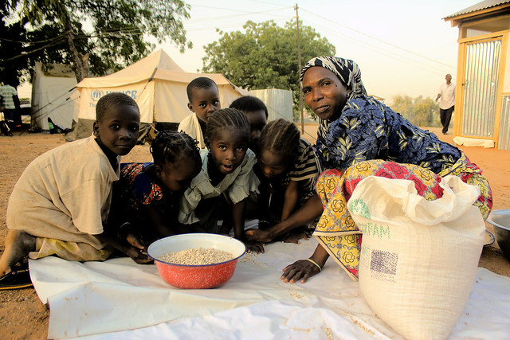
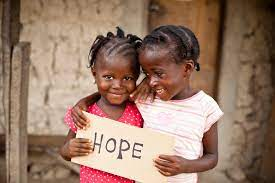
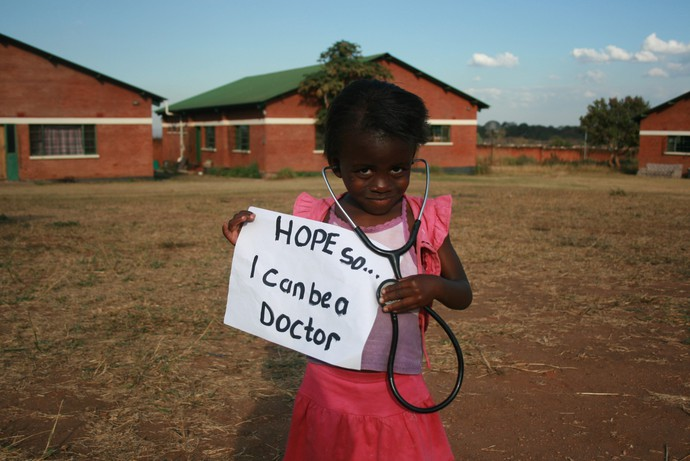
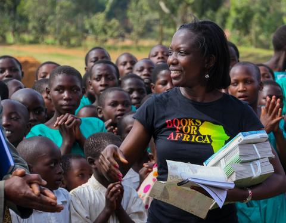
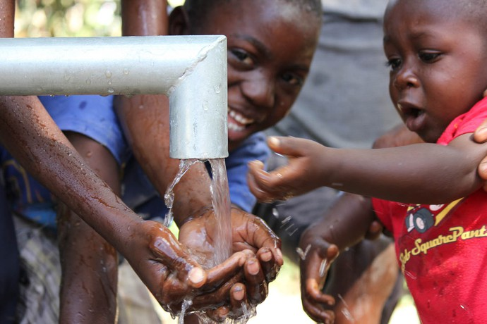
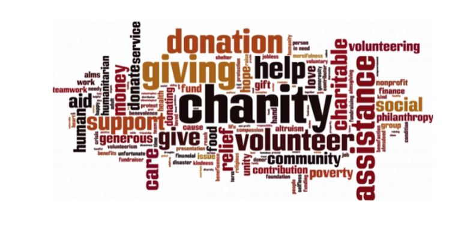
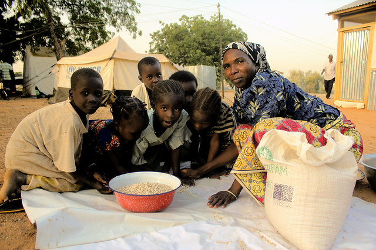
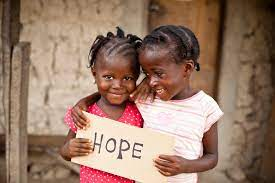
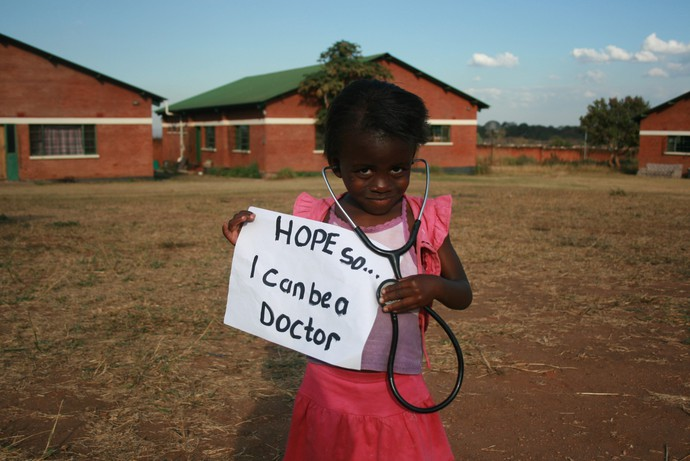
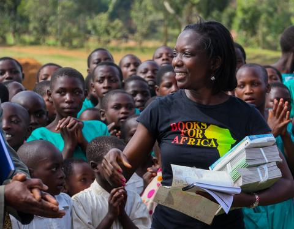
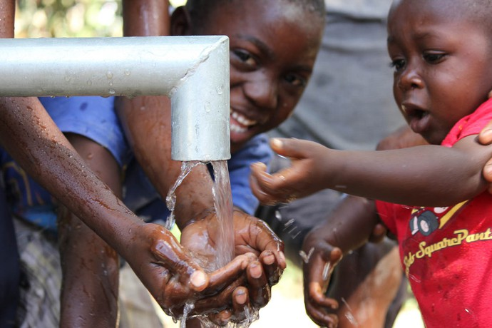
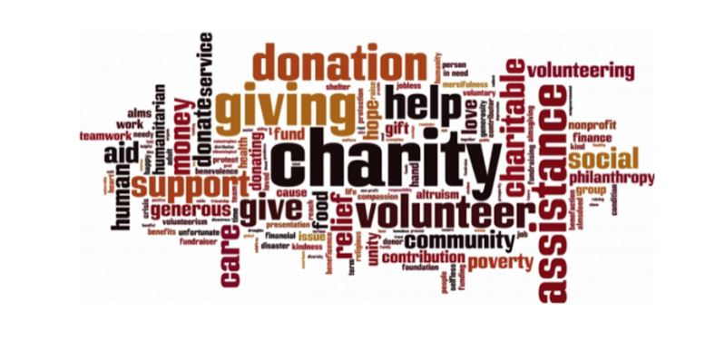
No matter the little you give you gain more let's help each other
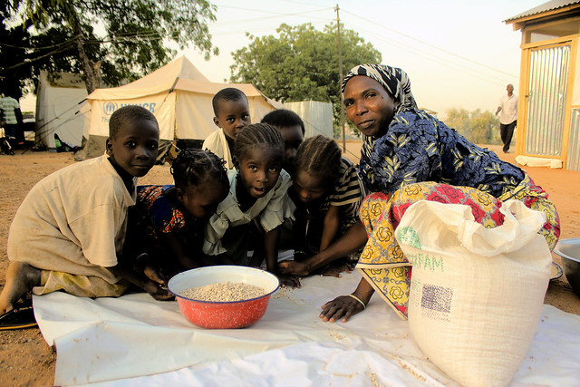
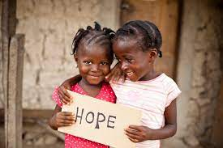
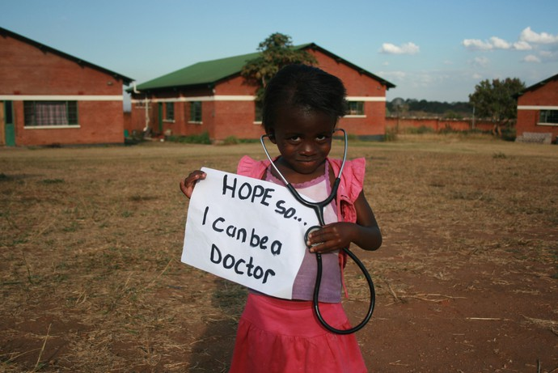
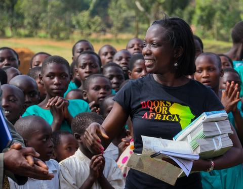
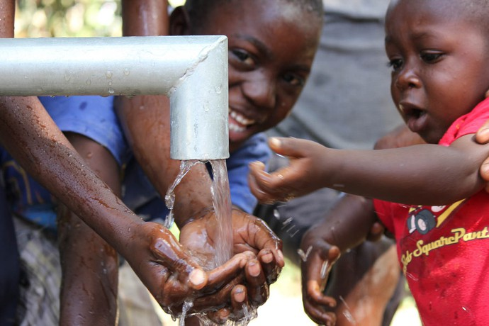
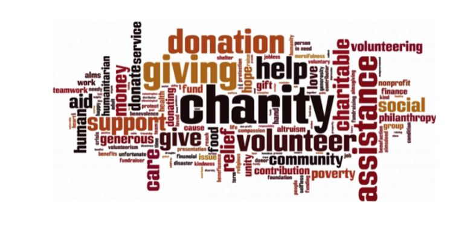
Did you mean: how many children need help in nigeria? Donate to Help Children in Nigeria | In Nigeria, more than 6 million children under five were already predicted to suffer from malnutrition across the Sahel this year. Now with flooding damaging crops and other food sources, hunger levels in Nigeria are likely to worsen.
Families are overwhelmed by the severe flooding. Many of them have never seen such devastation from the rain before and have been forced to leave have to change their habits and their environment and adapt to new living conditions.
1. Recent deadly floods have killed over 600 people in Nigeria and displaced 1 million more. The floods have led to a major increase in cholera cases.
2. Floods in the Sahel region are becoming more frequent and widespread. Since early July, intense rainfall has affected communities along the Niger-Nigeria border, triggering flooding which has damaged homes, displaced families and impacted food sources and livelihoods.
3. In Yobe state, Nigeria, an estimated 1.6 million people – nearly 40% of the population – don't know where their next meal will come from.
4. Cholera is creating an added danger for children, with cases of the waterborne disease spiking, with the majority of suspected cases affecting children under five years old.
5. In response to the flooding, Save the Children is carrying out water trucking, repairing water points, distributing WASH kits and providing psychosocial support to children most at risk.